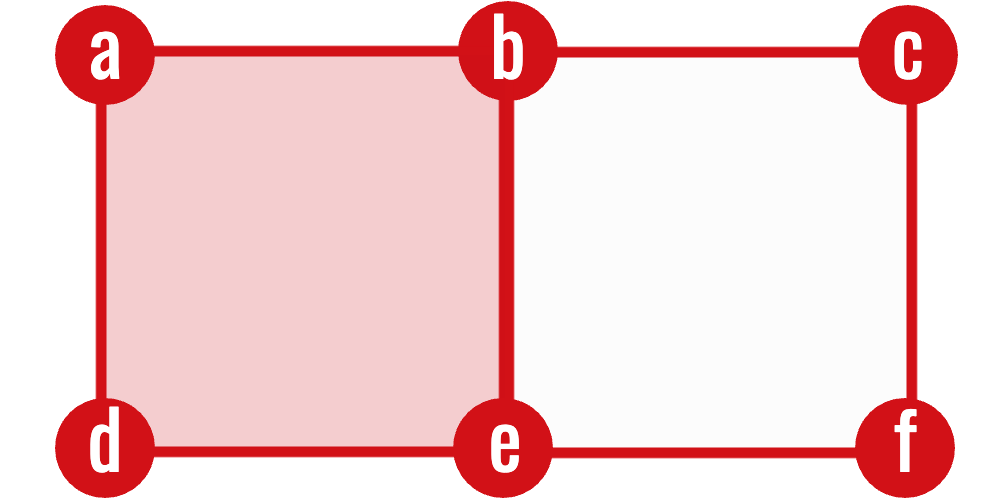

Computing Homology
Boundary matrices and reduction over F₂
The definition
\[ H_k=\ker\partial_k/\operatorname{im}\partial_{k+1} \]
is abstract, but a finite complex turns every boundary map into a finite matrix. Homology can therefore be computed by linear algebra.
For each dimension \(k\):
- list the \(k\)-cells and \((k-1)\)-cells;
- make one matrix whose \(j\)th column records the facets of the \(j\)th \(k\)-cell;
- compute the matrix rank over \(\mathbb F_2\); and
- substitute the ranks into \(\beta_k=n_k-r_k-r_{k+1}\).
Nothing geometrically new is introduced in this chapter. It is a coordinate version of the chain groups and boundary maps already defined.

No matrix has been chosen yet. The picture supplies the three finite lists that become its bases. Choosing an order for each list is the only additional step needed to turn the boundary maps into coordinate arrays.
1 Boundary matrices
Choose an ordering
\[ \sigma_1^k,\ldots,\sigma_{n_k}^k \]
of the \(k\)-cells and an ordering of the \((k-1)\)-cells.
Here \(n_k\) means “the number of \(k\)-cells,” and \(\sigma_j^k\) means “the \(j\)th cell in the chosen list.” The superscript is a dimension label, not an exponent.
Definition 1 (Boundary matrix) The \(k\)th boundary matrix \(D_k\) represents
\[ \partial_k\colon C_k\to C_{k-1}. \]
Its entry in row \(i\) and column \(j\) is
\[ (D_k)_{ij}= \begin{cases} 1,&\sigma_i^{k-1}\text{ is a facet of }\sigma_j^k,\\ 0,&\text{otherwise}. \end{cases} \]
Thus, a column is the boundary of one cell.
For example, if an edge \(e_j\) has endpoints \(v_2\) and \(v_5\), its column in \(D_1\) has a \(1\) in rows \(2\) and \(5\) and zero everywhere else. Multiplying \(D_1\) by a binary vector selecting several edges adds their endpoint columns; vertices incident to two selected edges cancel. A zero product therefore means that the selected edges form a cycle.
The chosen order controls where entries appear, but it cannot change the homology.
Proposition 1 (Betti numbers do not depend on the cell ordering) Reordering the bases of \(C_k\) and \(C_{k-1}\) changes the boundary matrix to
\[ D_k'=P_{k-1}D_kP_k^{-1}, \]
where \(P_{k-1}\) and \(P_k\) are permutation matrices. Consequently \(\operatorname{rank}D_k'=\operatorname{rank}D_k\), and every Betti number is unchanged.
Proof. Permutation matrices are invertible. Multiplication by an invertible matrix on either side does not change rank: it merely expresses the same linear map in different ordered bases. The formula in Theorem 1 depends only on cell counts and boundary ranks, both of which are unchanged.
Ordering is nevertheless an implementation requirement. A program must use the same row ordering for \(D_k\) that it uses as the column ordering for \(D_{k-1}\); otherwise the product \(D_{k-1}D_k\) no longer represents the composition of the two boundary maps.
2 The matrix chain condition
Proposition 2 (Matrix chain condition) For consecutive boundary matrices,
\[ D_{k-1}D_k=0. \]
Proof. Coordinates respect composition: \(D_{k-1}D_k\) is the matrix of \(\partial_{k-1}\circ\partial_k\). The fundamental lemma of homology says this composite is the zero map, so its matrix is the zero matrix.
This is both a theorem and a useful implementation test. If two consecutive boundary matrices have a nonzero product, then the complex, cell ordering, or boundary construction is incorrect.
3 Betti numbers from ranks
Rank–nullity gives
\[ \dim\ker D_k=n_k-\operatorname{rank}D_k. \]
Also,
\[ \dim\operatorname{im}D_{k+1} = \operatorname{rank}D_{k+1}. \]
Theorem 1 (Betti calculation via rank) Therefore,
\[ \boxed{ \beta_k = n_k-\operatorname{rank}D_k-\operatorname{rank}D_{k+1} } \]
Proof. The cycle space is \(\ker D_k\) and the boundary space is \(\operatorname{im}D_{k+1}\). Hence
\[ \beta_k=\dim\ker D_k-\dim\operatorname{im}D_{k+1}. \]
Rank–nullity gives \(\dim\ker D_k=n_k-\operatorname{rank}D_k\), and the dimension of the image is \(\operatorname{rank}D_{k+1}\). Substituting yields the displayed formula.
This formula computes Betti numbers without explicitly constructing quotient spaces.
4 Example: an unfilled triangle
Let the vertices be \(v_0,v_1,v_2\) and the edges \(e_{01},e_{12},e_{20}\). With rows ordered by vertices and columns by edges,
\[ D_1= \begin{pmatrix} 1&0&1\\ 1&1&0\\ 0&1&1 \end{pmatrix}. \]
Over \(\mathbb F_2\), \(\operatorname{rank}D_1=2\). There are no \(2\)-cells, so \(D_2\) has rank zero.
Hence
\[ \beta_0=3-2=1, \qquad \beta_1=3-2-0=1. \]
Adding the triangular \(2\)-cell creates a one-column matrix
\[ D_2= \begin{pmatrix} 1\\1\\1 \end{pmatrix}. \]
Its rank is \(1\), so \(\beta_1=3-2-1=0\). Algebra detects that the loop has been filled.
5 Binary Gaussian elimination
The following routine computes matrix rank over \(\mathbb F_2\).
import numpy as np
def rank_mod2(matrix):
a = np.asarray(matrix, dtype=np.uint8).copy() % 2
rows, cols = a.shape
pivot_row = 0
for col in range(cols):
candidates = np.flatnonzero(a[pivot_row:, col])
if len(candidates) == 0:
continue
pivot = pivot_row + candidates[0]
a[[pivot_row, pivot]] = a[[pivot, pivot_row]]
for row in range(rows):
if row != pivot_row and a[row, col]:
a[row] ^= a[pivot_row]
pivot_row += 1
if pivot_row == rows:
break
return pivot_rowFor dense matrices this is adequate pedagogically. Real complexes produce large sparse matrices, so practical implementations store only the indices of nonzero entries.
6 An explicit Betti-number algorithm
For an \(n\)-dimensional finite complex, put \(d_k=|K_k|\) and introduce the boundary ranks \(r_0=r_{n+1}=0\). The complete computation is:
group the cells by dimension and choose a fixed ordering within each group;
assemble \(D_k\in\mathbb F_2^{d_{k-1}\times d_k}\) for \(1\leq k\leq n\);
reduce each \(D_k\) over \(\mathbb F_2\) to obtain \(r_k=\operatorname{rank}D_k\);
return
\[ \beta_k=d_k-r_k-r_{k+1}, \qquad 0\leq k\leq n. \]
Proposition 3 (Correctness of the Betti-number algorithm) The procedure above returns
\[ \bigl(\dim H_0(K),\ldots,\dim H_n(K)\bigr). \]
Proof. Matrix assembly makes \(D_k\) the coordinate representation of \(\partial_k\). Gaussian elimination preserves the represented linear map’s rank, so Step 3 returns \(r_k=\dim\operatorname{im}\partial_k\). By rank–nullity, \(\dim\ker\partial_k=d_k-r_k\). Since \(\operatorname{im}\partial_{k+1}\subseteq\ker\partial_k\),
\[ \dim H_k =\dim\ker\partial_k-\dim\operatorname{im}\partial_{k+1} =d_k-r_k-r_{k+1}. \]
This is exactly the quantity returned in Step 4.
This algorithm computes the dimensions of homology groups. The persistence algorithm developed later reduces one global boundary matrix in filtration order; it retains pivot pairings as well as ranks, and those pairings encode births and deaths.
The rank formula answers “how many features exist in this one complex?” Persistent reduction answers “when did each feature appear, and when did it disappear?” The latter needs the cells ordered by filtration time and retains the column pairings rather than only the final ranks.
7 Building a cubical boundary matrix
For a \(k\)-cube
\[ \kappa=I_1\times\cdots\times I_n, \]
its boundary contains the upper and lower facets associated with every non-degenerate factor:
\[ \partial\kappa = \sum_i\left(\delta_i^-\kappa+\delta_i^+\kappa\right). \]
An implementation can therefore:
- enumerate all cells by dimension;
- create a dictionary from each cell to its row index;
- generate the facets of each \(k\)-cell; and
- set the corresponding entries in column \(j\) of \(D_k\).
Canonical cell representations are essential. If the same shared edge is encoded in two different ways, cancellation will fail.
8 Complexity and sparsity
A \(k\)-cube has at most \(2k\) facets, so every column of a cubical boundary matrix is sparse. The challenge is not constructing a column but reducing a large collection of columns.
Useful implementation practices include:
- integer or bitset representations over \(\mathbb F_2\);
- sparse column storage;
- dimension-by-dimension processing;
- clearing columns no longer needed; and
- verifying \(D_{k-1}D_k=0\) on test complexes.
9 Sanity tests
Before processing real data, a homology implementation should recover:
| Complex | Expected nonzero Betti numbers |
|---|---|
| one vertex | \(\beta_0=1\) |
| two isolated vertices | \(\beta_0=2\) |
| tree | \(\beta_0=1\) |
| unfilled square | \(\beta_0=1,\ \beta_1=1\) |
| filled square | \(\beta_0=1\) |
| hollow cube boundary | \(\beta_0=1,\ \beta_2=1\) |
These small examples expose most errors in face generation, indexing, and coefficient arithmetic.
A boundary matrix contains incidence information: rows are faces, columns are cells, and a \(1\) means “is a facet of.” Reduction over \(\mathbb F_2\) computes the ranks needed for Betti numbers. Persistent homology will use essentially the same matrix operations, but in a filtration-compatible order.
10 Exercises
- Construct \(D_1\) for a path with three vertices and two edges.
- Use the rank formula to compute its \(\beta_0\) and \(\beta_1\).
- Construct \(D_1\) and \(D_2\) for a filled square.
- Explain why every column of \(D_1\) has exactly two nonzero entries.
- Why is sparse column storage natural for cubical boundary matrices?
Previous: Homology · Course contents · Next: Persistent Homology